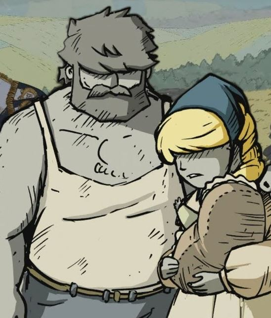

Mrs. Keidann is a Latvian women, mother of Markuss and Kris Keidann. Born a lutheran, she later married Mr. Keidann and joined the baptist church., becoming one of its' key figures. Pregnant when the 1905 revolution started, she volunteered to help for the wounded in the church, which almost cost her life as the church was burnt down by Russian Forces. After a nasty fall escaping the church, she lost her unborn daughter, and would bear health problems for the rest of her life.
Her health deteriorated rapidly after Markuss left for the Army and Kris fled home. She fled Kurzeme when the german army advanced in 1915, but was separated from her husband. In Vidzeme, she took refuge in her brother’s house. During this year she became extremely sick, and in his last visit, she asked Markuss to rescue his brother.
After the fall of Riga, Markuss loses all contact with her and later discovers she died in 1918.
Appearance and Character #
A brown-haired, green eyed beautiful woman, Mrs. Keidann was a caring woman. (Author note: I am a little tired of describing people today, I have to finish it later.)
History #
[To be added]